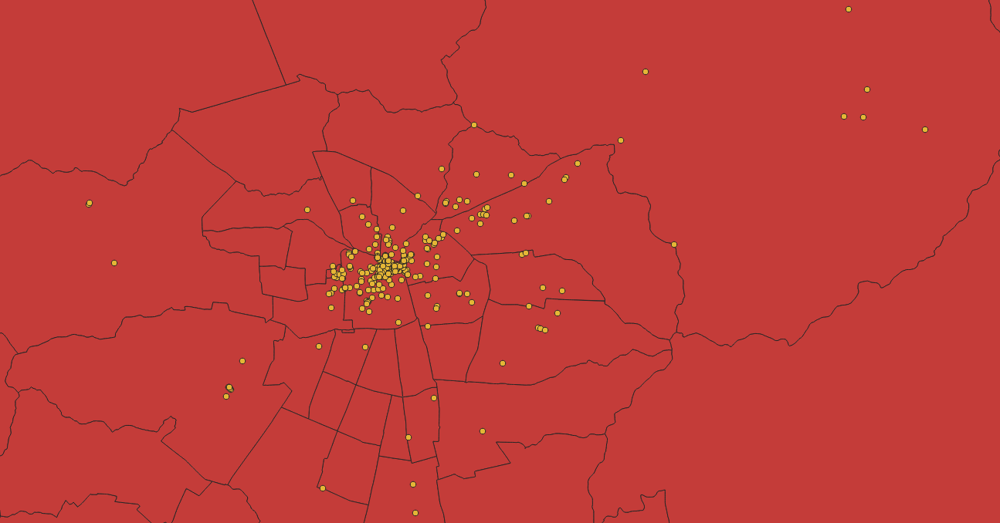

Unidad 2: Manipulación de Geodatos (Parte 1)
Join Espacial
Adicionalmente, existe otra forma de unir bases de datos espaciales. Esta consiste en unir información de la tabla de atributos de un shapefile a otro, esta se conoce como Join Espacial, y el único requerimiento que necesita es que ambos shapefiles tengan el mismo sistemade coordenadas y referencia, y que tengan alguna relación espacial es decir, que se superpongan, que se intersecten, se contengan, etc.

Ilustración: LabGRS 2020
Le invitamos a que revise el siguiente videotutorial dónde podrá encontrar el como realizar los diferentes tipos de Join utilizando el sofware SIG QGIS.
Obra publicada con Licencia Creative Commons Reconocimiento Compartir igual 4.0